È buono,è sardo,è Aresu.
La Formaggi Aresu produce formaggi tradizionali sardi dal 1938.
Scopri i formaggiIl formaggio Sardo.
Lavoriamo lontani dal mare e dalle città, immersi nella natura più incontaminata del sud Sardegna. L'aria è pulita, i pascoli sono in salute.
Per fortuna dalle nostre parti, nel sud Sardegna, l'isolamento, la lontananza dal mare e dalla città ha tutelato ed arricchito un prodotto veramente unico.
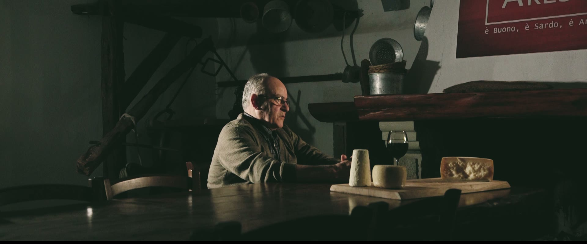
«Ero un bambino. Forse ero con mia madre, Assuntina. Non ricordo che qualcuno mi abbia insegnato a fare il formaggio. Ricordo bene, però, che lo sapevo fare.»Dal film di Formaggi Aresu
La storia insegna,nel passato c’è il futuro.
La famiglia Aresu affonda le sue radici nei ricordi e nel lavoro passato, dal quale tutt’oggi attinge per migliorarsi ed innovarsi.
Leggi la storia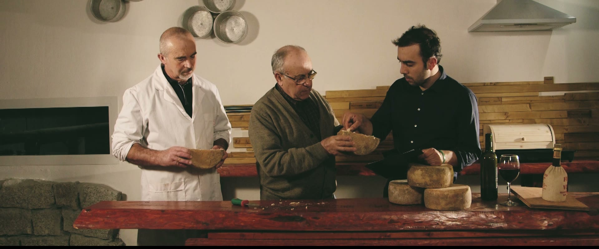
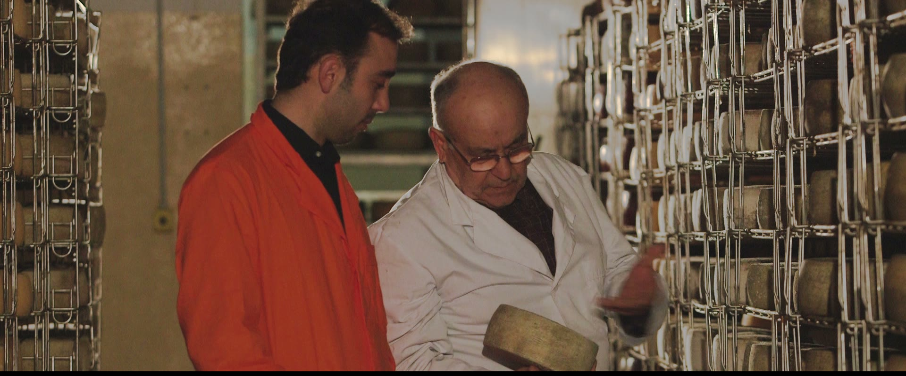
«Tutti possono mettere il caglio nel latte. Quello che fa la differenza sono le mani.»
Una vasta gammadi prodotti.
Vengono prodotte circa 40 diverse referenze, dai pecorini DOP, ai formaggi caprini; ricotte fresche e stagionate, e tante altre specialità casearie sarde.
Scegli il tuo formaggioPuò sembrare una moderna industria alimentare.
Caglio in pasta di agnello sardo IGP
Come vuole la tradizione, alcune referenze vengono prodotte utilizzando caglio tradizionale, prodotto da animali nati, cresciuti in Sardegna, con la certificazione IGP.
Sale marino di Sardegna
La salatura avviene con sale marino di Sardegna; un prodotto sardo, genuino, ma molto più costoso.
Una casa di mattoni
Anziché utilizzare pannelli isolanti sintetici, i Formaggi Aresu stagionano in celle di muri di mattone, che ne garantiscono una respirazione naturale ed un ricambio d’aria costante, anche se le celle in mattoni sono più costose da mantenere.
Legna vera
La stagionatura avviene su tavole di abete massello stagionato, che permette al formaggio di “respirare” in maniera naturale, anche se le tavole di plastica sono più semplici da mantenere.
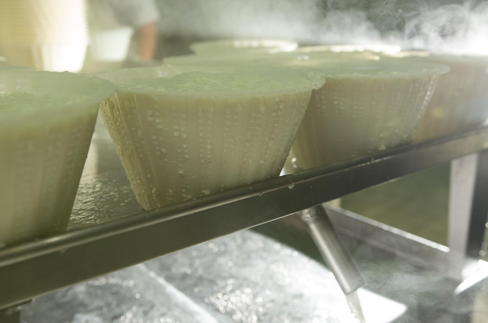
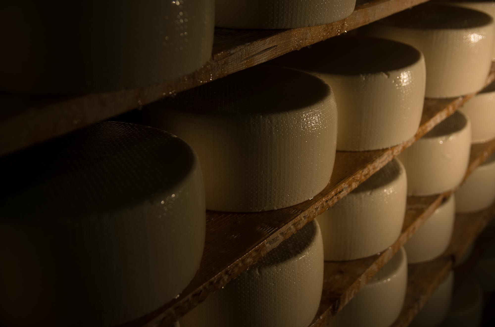
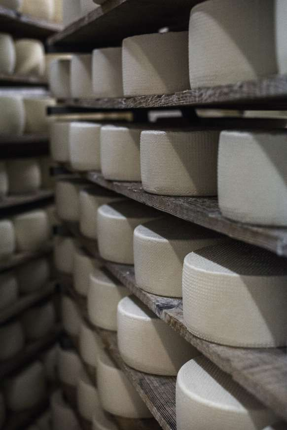
Maestri della tradizione
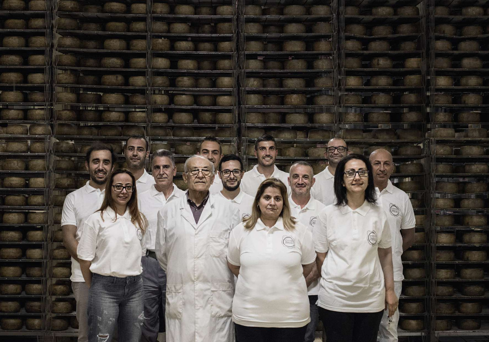
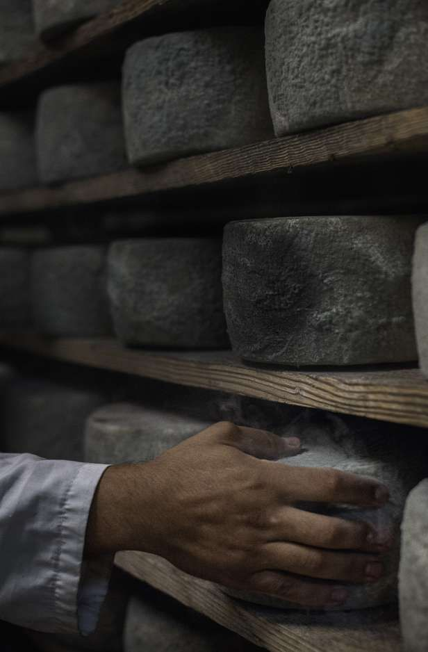
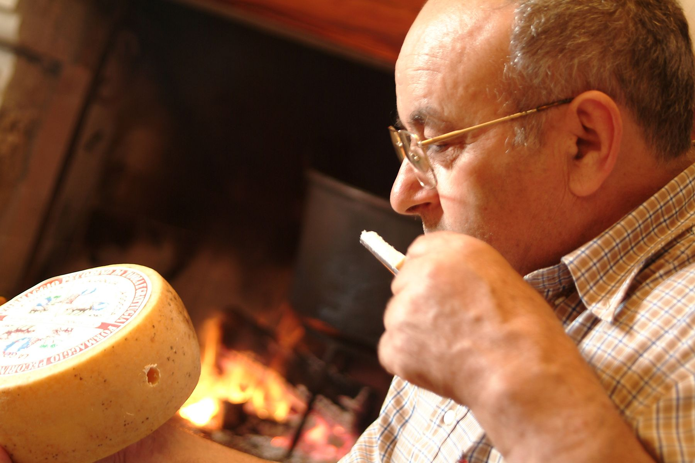
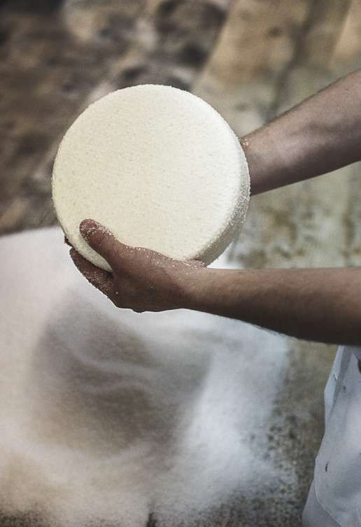
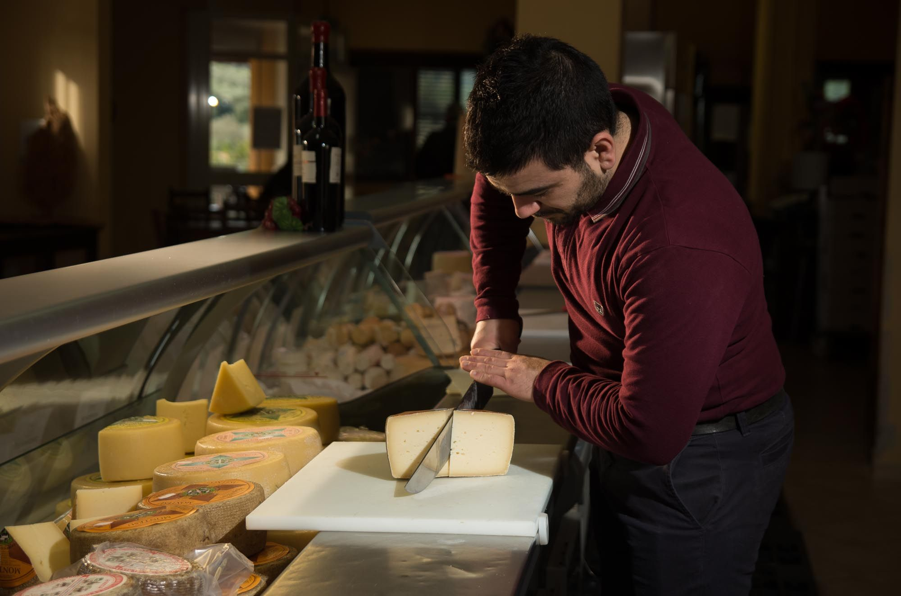
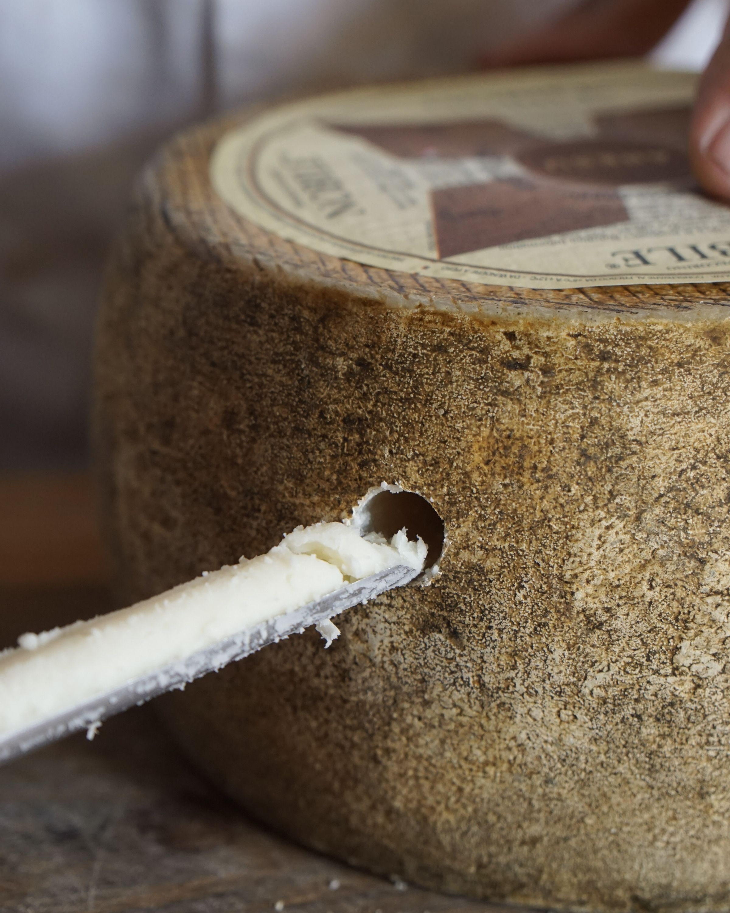
Un gruppo di artigiani veri,una grande famiglia.
«Siamo artigiani del formaggio: gli occhi conservano ciò che hanno visto e le mani lavorano sapientemente ciò che la natura produce.»
01Il valore delle mani
Le mani non dimenticano quello che gli occhi hanno visto. Molte lavorazioni vengono fatte manualmente, perché le mani sono meglio.
02Maestri
La natura produce, le mani la conservano. L’arte casearia sarda dietro ogni pezzo di formaggio.
03Il tempo insegna
Fidati di secoli di tradizione, in Sardegna si produce formaggio fin dall’età del bronzo (1800 a.C.).
A Donori e a Cagliari
Punto vendita Donori
Via Is Arenas 3
09040 Donori (SU)
+39 391 111 2700
Lun–Ven 8:00–18:00
Sab 8:00–16:00
Domenica chiuso
Stabilimento produttivo
Via Is Arenas 5
09040 Donori (SU)
+39 070 981177
Shop & Cheesebar Marconi
Viale Marconi 200
09131 Cagliari
+39 366 787 0209
Shop & Cheesebar Elmas
Viale Elmas 19
09122 Cagliari
+39 388 120 3069